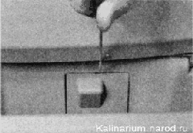
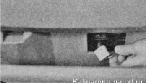
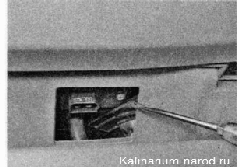
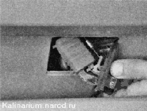

Дополнительный резистор - проверка и заменаДля выполнения работы потребуется мультиметр. Снятие 1. Подготавливаем автомобиль к выполнению работы. 2. Внутри полки панели приборов шлицевой отверткой поддеваем и снимаем заглушку. 
3. Отсоединяем колодку проводов от резистора.  4. Крестовой отверткой отворачиваем саморез крепления дополнительного резистора. 
5. Извлекаем резистор. Проверка 1. Визуально убеждаемся в целости спиралей, отсутствии обугливания и других повреждений. 2. Мультиметром в режиме омметра проверяем спирали добавочного резистора на обрыв. При обнаружении обрыва в одной из спиралей заменяем дополнительный резистор. Установка Устанавливаем дополнительный резистор в последовательности, обратной снятию. |